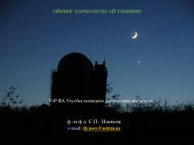

OHOy harakati va taqvim turlari haqida qisqa ilmiy ma'lumotnoma.
Ushbu ilmiy maqola Oyning Yer atrofidagi harakati, uning davrlari (siderik va sinodik oylar) haqida ma'lumot beradi. Shuningdek, quyosh, oy va oy-quyosh taqvimlari turlari hamda insoniyat tarixidagi muhim eralar tahlil qilinadi. Asar O'zbekiston Fanlar Akademiyasi Ulug'bek nomidagi Astronomiya instituti tomonidan tayyorlangan.